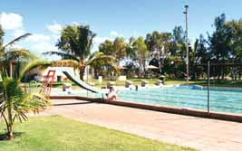

９１．「あれは夢か幻か」(日本、写真有)
よく話で外国に旅行してから帰国すると夢の様だったと言われる。実際にこの様に話した人たちはどこまで実感し
ているのだろうかと思うことがある。これは物事の例えで実感ではないだろうと堅く信じていた。しかしながら言葉
の例えでよく使われる、「美人を見て鼻の下を延ばす」「艶物をみて目眩をする」は現実に私が目撃したり経験して
いた。「１６章美人を見て眩暈がする、鼻の下が延びるは本当なんだ？」
オーストラリアに行く３年前に福山から横浜に引っ越しして来ていた。それからオーストラリアに赴任した。
オーストラリアに行く前に荷物を２つに分けて、１つはオーストラリアへ、もう一つは福山に送っていた。

３年後オーストラリアから帰国し、横浜の社宅に戻った日の午後に福山から荷物が届く。その日早めに横浜の社宅
に着き、荷物が到着する少しの間、畳に横になり数分仮眠した。起きて荷物が福山から届くと思った瞬間、福山から
ここに引っ越して来た日がよみがえり、今日がその日と思ってしまった。そして、あれ？オーストラリアの３年間の生
活はこの瞬間の夢だったんだと実感しました。
しばらく、オーストラリアの日々を思い出し、否夢じゃない本当にオーストラリアに行っていたんだと確認してか
ら、あ！これがあの例え「夢のようだった」なのかと思いました。
２００１年１０月２０日 記
|